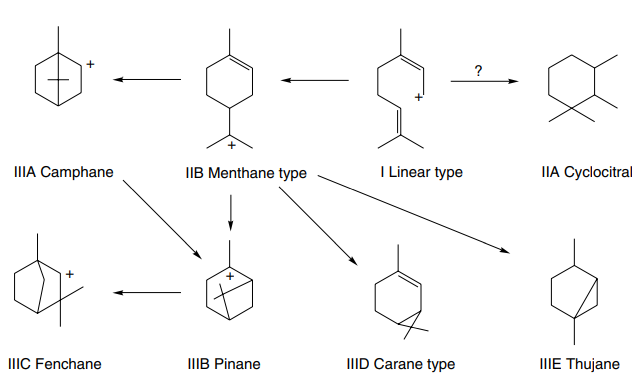
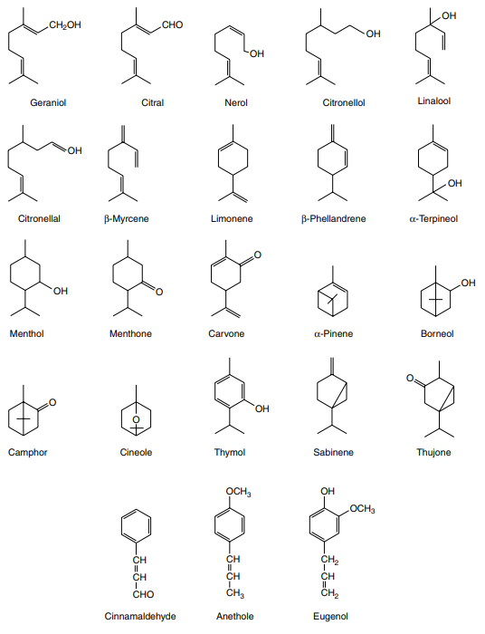

Volatile Oils:
→ volatile or essential oils as their name implies, are volatile on steam
→ secreted in :
- oil cells
- secretion ducts or cavities
- glandular hairs
Production and uses of volatile oils:
→ Large quanties of volatile oil are producecd annually [ several metric tones ]
— lemon oil — eucalyptus oils — clove leafe oil — peppermint oil
→ are used for therapeutic actions:
- flavouring ( e.g. // oil of lemon)
- perfumery ( e.g. // oil of rose )
- starting materials for synthesis of other compounds ( e.g. // oil of tupretine )
- inhalations (e.g. // eucalyptus oil )
- orally (e.g. // peppermint oil )
- gargles and mouthwashes (e.g. // thymol )
- transdermally (e.g. // lavender,rosemary,bergamot → practice of aromatherapy )
↔ those oils with a high phenol content e.g. // clove and thyme → antispeptic properties
- Mellisa officinalis
- Rosmarinus officinalis
- Mentha piperita
- Marticaria chamomilla
- Foeniculum vulgare
- Carum carvi
- Citrus aurantium
Composition of volatile oils :
→ exception of oils derived from glycosides ( bitter almond,mustard oil)
- generally are mixture of hydcrocarbons and oxygenated compounds derived from these hydrocarbons.
→ in some extend are
- soluble in water
- but more soluble in alcochol.
- e.g. // cinammon and clove contain principally aromatic(benzene)derivatives mixed with terpens.
- few compounds (thymol,carvacol) although aromatic in structure , are terpenoid in origin.
Evaluation:
→ odour and taste (preliminary examinations)
→ physical measurement — optical rotation — relative density — refractive index ( for identification + purity )
→ thin-later-chromatography (identification and purity)
→ gas chromatography ( chilarity )
Biogenesis:
→ medicinal essential oils:
- number of the former is limited but for the monoterpenes which arise at the geranyl pyrophosphate(GPP) level of terpenoid synthesis there are numerous examples
- 40-80 monoterpenoids
→ 3 groups of monoterpenoid structures are involved:
① acyclic or linear
② monocyclic
③ bicyclic
→ they are derived from Limonene
.
→ few enzymes,termed "cyclases"
- determine skeletal class
- rate-limiting enzymes.
→ Mentha spp. has been shown that (-)-limonene synthase located within the oil glands catalyses the isomerization of GPP to enzyme-bound (+)-3S-linalyl pyrophosphate with
subsequent cyclization to (-)-limonene.
- many enzymatic steps involved in the subsequence modifications and intervorvention of these monoterpens.

→
 v
v→ volatile oils also occurs in plants in the glycosidic form.
→ C20 or diterpenoid compounds, include volatile oils-resins such as:
- (+),(-)-pimaric acid and the isomer
- abietic acid of pine resin [with antimicrobial,antiulcer,cardiovascular properties]
→ C30 or triterpenoids [small portion]
- resins in Euphorbia resinifera
Preparation of volatile oils:
→ extracted by distillation [with exception of oil of lemon/cade ]
- water or steam
- raw material on perforated trays / perforated basket
- contain water on the base which is heated by steam coils + free under pressure may also be passed in.
- mixture of oil and water → condensed and collected
- separtes into two layers [ upper outlet : oil / lower outlet : water ] or [vica cersa for heavier oils than water → "oil of cloves"]
→ Rectification
- form of second distillation in tsteam , which frees the oil from resinus and other impurties.
Oil of rose (Otto or Attar of Rose, Oleum Rosea)
→ fresh flowers of Rosa damascena,gallica,alba,centifolia, (Rosaceae)
- Bulgaria,Turkey,Marocco
- expensive
→ solid portion:
- 15-20% constist of : — staurated aliphatic hydrocarbons (C13-C23, normal paraffins)
- 70% alcochol: — geranil — citronellol — nerol — 2-phenylethanol — smaller quantities of esters/other odorous pricnciples.
PEPERMINT OIL:
→ Peppermint Leaf
- dried leaves of Mentha x Piperita (Labiatae) — required to contain not less than 1.2% of volatile oils —
- European : Mentha piperita var. vulgaris ("black mint") *American : Mentha piperita var. officinalis ( "white mint")
→ 4.5-10% of esters : — menthyl acetate,
→ not less 44% of free alcochols : — menthol
→ 15-32% of ketones: — menthone
- limonene
- cineole
- menthone
- mentofuran
- isomenthone
- methylacetate
- menthol
→ sesquiterpene "viridoflorol" form of useful identification characteristics of the oil.
→ high resolution of GC : more than 85 compontents of the oil
- greatly infulenced by — genetic factors — seasonal variation
SPREAMINT OIL:
→ ordinary garden min
- dried leaf and flowering tops of
- Mentha spicata and Mentha x cardiaca (Labiatae)
- 55% of carvone
- 2-25% limonene
- phellandrene and esters.
SAGE OILS:
→ official drug whole or cut leaves of
- Slavia officinalis (Labiatae)
- 1.5% whole leaf
- 1.0% cut leaf of essential oil
→ Salvia sclarea:
- α and β -thujone (less than 0.2%)
- linalol (6.5-24%)
- linalyl acetate (50-80%)
- α-terpinelol ( >5.0%)
- germacrene -D (1.0-12%)
- sclareol (0.4-2.6%)
ROSEMARY OIL:
→ whole dried leaf of
- Rosmarinus officinalis , Lamiaceae
- Mediterranean [Spain,Marocoo,Tunisia]
- aromatic evergreen shurb
- oil is — pale yellow with very characteristic odour.
- 0.8-6% of esters and 8-20% of alcochols
- 1.8-cineole
- borneol
- camphor
- bornyl acetate
- α-pinene
- camphene
LEMON BALM:
→ dried leaf of :
- Melissa officinalis (Lamiaceae)
- perennial herb
- native to South/Eastern Mediterranean
- 0.06-0.4%
- aldehydes citral (isomers of geranial and neral )
- citronellal
- citronellol
- nerol
- sesquiterpene β-caryophellene
→ total content of <4.0% of hydroxycinnamic acid derivatives expressed as romsarinic acid [structually related to caffeic acid]
→ sedative,spasmolytic,antibacterial properties.
THYME OIL:
→ Thymus species
- dried aerial parts of :
- T.vulgaris
- T.zygis (Labiatae) or mixtures of two
→ Mediterranean
→ volatile composition NOT LESS than:
- 1.2% volatile oil which NOT LESS
- 40% consist of thymol and carvacrol → [ antiseptive,antitussive,expectorant properties of the drug]
- cymene (10-24%)
- γ-terpinene (4-18%)
- β-mycrene (1-3%)
- linalol (4.0-6.5%)
- terpinen -4-ol (5-10%)
- thymol (36-55%)
- carvacol (1.0 4.0%)
ΟREGANO OIL:
→ Origanum onties (Majoram onites)
→ Origanum vulgaris (Labiatea)
→ strong,thyme-like odour.
→ required minimum of 2.5% oil in the drug
- caryophyllene
- β-bisabolene
- cymene
- linalool
- borneol
→ antispeptic properties,digestive disorders,pharyngeal infenctions,mild fevers.
LAVENDER OIL:
→ Lavandula angustifolia (Labiatae) "forein oil" → [volatile content:1.3%]
→ Lavandula intermedia (Labiatae) "English oil" → [finer fragrance]
→ France,Bulgaria,former USSR,Australia
→ peak camphor should not exceed 1% → [except L.latifolia which is camphoraceous species]
OIL TYPES
→ true lavender
- Lavandula officinalis → "best oil" , high alltidute
- Lavandula latifolia → "much coarser oil" — "oil of spike" → [little ester but high amount of alcochols 23-41% as borneol]
- over 35% of esters
- linalol (20-45%)
- linalyl acetate (25-46%)
- maixamal limit of 1.2%
→ Lavandula stoechas , Spain,France
- different odour + 51 volatile compounds.
- fenchone
- pinocaryl acetate
- camphor
- eucalyptol
- myrtheneol predominate
→ toiletary and perfumery industries.
- occasionally in ointments
- mask odours
→ exctensively used in aromatotherapy.
CARWAY OIL:
→ Caraway Fruit,dried,ripe fruits of :
- Carum carvi (Umbelliferae)
- bennial herb
→ ketone : carvone(50-65%)
- carveol(2.5%)
→ β-mycrene
to be continiued.....
{kind=link}
{kind=link}